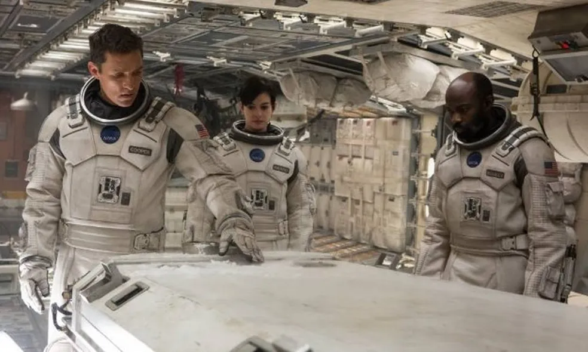

ELENCO
Matthew McConaughey: Joseph "Coop" Cooper
Anne Hathaway: Dra. Amelia Brand
Jessica Chastain: Murphy "Murph" Cooper
Mackenzie Foy: Murphy, jovem
Ellen Burstyn: Murphy, idosa
John Lithgow: Donald
Michael Caine: Professor John Brand
Casey Affleck: Tom Cooper
Timothée Chalamet: Tom Cooper, jovem
Wes Bentley: Dr. Doyle
Bill Irwin: TARS (voz)
Josh Stewart: CASE (voz)
Topher Grace: Getty
David Gyasi: Dr. Romilly
Matt Damon: Dr. Mann
Leah Cairns: Lois Cooper
David Oyelowo: Diretor da Escola de Murphy
Collette Wolfe: Sra. Hanley
William Devane: Williams
Elyes Gabel: Administrador da NASA
Jeff Hephner: Médico